Mostrar quando importa.
Na patrulha, a cidade ocupa a tela. Sob ameaça, vida, escudo, mira e munição entram juntos. Na beira da morte, o alarme toma as bordas e deixa o centro livre para mirar.
Case 15 · Game UI / UX · Direção de arte · Protótipo jogável
Um sistema de HUD para ação em terceira pessoa que muda de prioridade com a situação: some na patrulha, entra no combate e toma as bordas da tela quando a vida acaba. Os prompts acompanham o controle em uso e a roda de armas desacelera o mundo. Tudo jogável no navegador.
Jogar o protótipo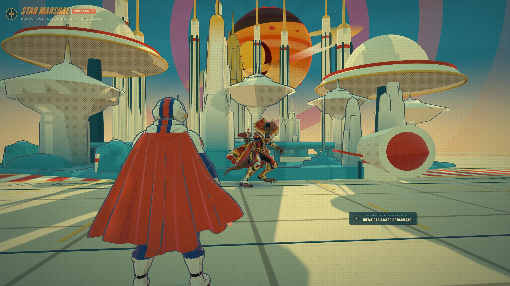
Captura do protótipo WebGL em exploração. Vespera-9 e o Star Marshal são um universo fictício.
01 · A intenção
Em jogos de ação, o HUD disputa a tela com tudo o que o estúdio construiu. A proposta aqui é mostrar cada informação só quando ela muda uma decisão do jogador, e colocar o resto dentro do mundo.
Na patrulha, a cidade ocupa a tela. Sob ameaça, vida, escudo, mira e munição entram juntos. Na beira da morte, o alarme toma as bordas e deixa o centro livre para mirar.
O scanner pertence ao traje, o marcador pertence ao alvo, o prompt pertence à evidência. Cada indicador fica perto do objeto a que se refere.
O jogador não escolhe a família de ícones num menu: o último dispositivo tocado decide. A roda de armas dá tempo para escolher sem pausar o jogo.
02 · HUD contextual
Compare o que aparece, o que some e o que ganha destaque. As imagens são capturas do protótipo; os números vêm de medições feitas nele.
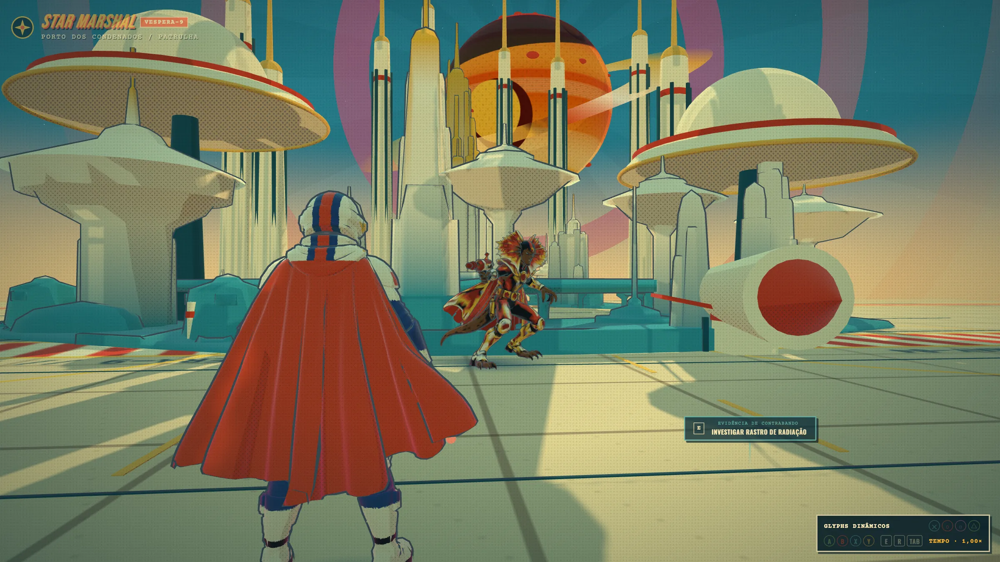
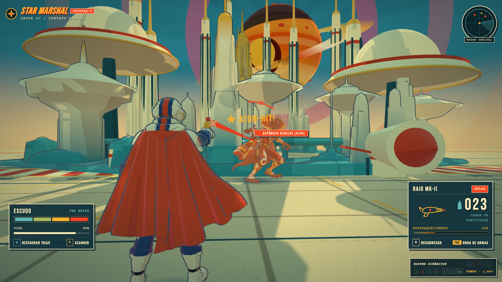
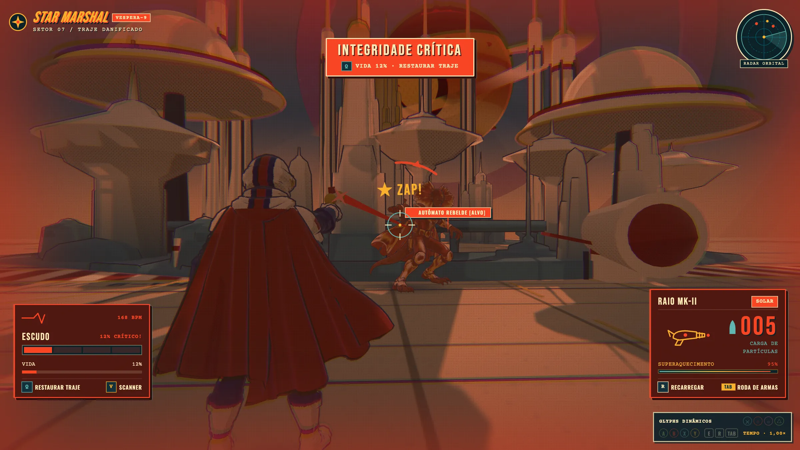
A paisagem é a protagonista.
Projetado para quando não há hostis por perto; no protótipo, pelo atalho 1. Vida, escudo, munição, radar e mira saem de cena e deixam de receber foco do teclado.
A informação acompanha a ameaça.
Entra quando o jogador atira (ou pelo atalho 2). O centro da tela fica reservado à mira e ao alvo.
A urgência ocupa as bordas.
Projetado para vida abaixo de 15%; no protótipo, pelo atalho 3. A cor nunca é o único sinal: todo alerta tem texto. Com "reduzir movimento", a vinheta fica fixa.
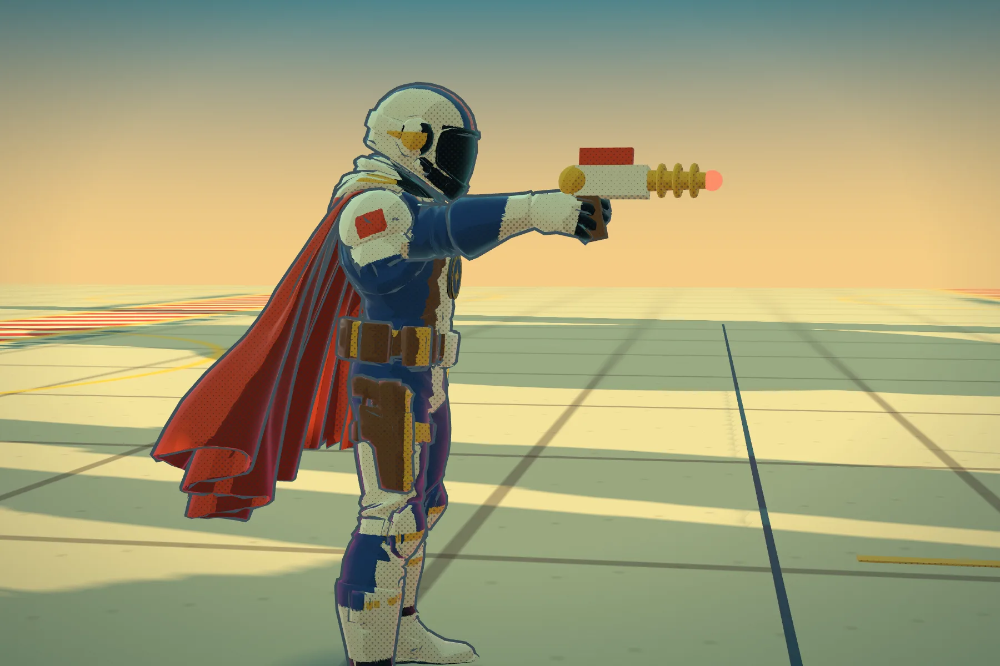
A mão mira. O raio sai do cano.
03 · Ergonomia de controle
O último dispositivo usado decide os ícones. Pegue um controle ou mexa no teclado e no mouse: os prompts abaixo trocam sozinhos. Também dá para escolher a família manualmente.
| Ação | PlayStation | Xbox | Teclado e mouse |
|---|---|---|---|
| Investigar / confirmar | ✕ | A | E · Enter |
| Recarregar | ▢ | X | R |
| Scanner de pulso | △ | Y | V |
| Restaurar traje / cancelar | ◯ | B | Q · Esc |
| Abrir a roda | L1 | LB | Tab |
| Percorrer a roda | L1 / R1 · analógico direito | LB / RB · analógico direito | Q / E · setas |
| Atirar | R2 | RT | Clique |
| Andar / mirar | Analógicos | Analógicos | WASD · mouse |
04 · Escolha sob pressão
Seis setores ao redor de um único foco. Enquanto a roda está aberta, o tempo do mundo cai para 0,10×: dá para escolher sem pausar e sem perder a leitura do combate.
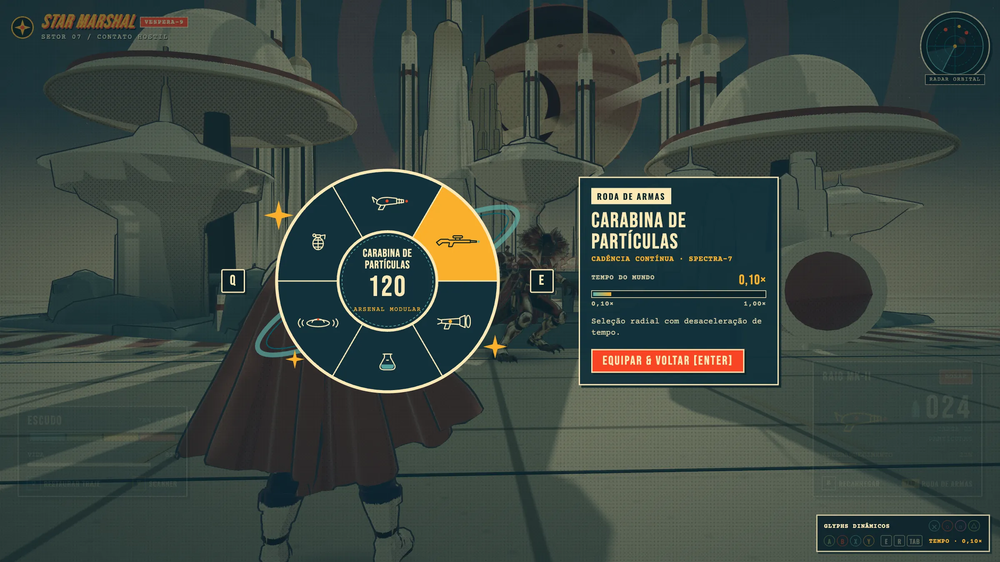
Decaimento exponencial (k = 12) a partir do tempo real. HUD, clarão e vinheta seguem o relógio da tela, então a interface nunca fica lenta junto com o mundo.
L1 abre · analógico direito seleciona · ✕ equipa · ◯ cancela
05 · UI diegética e espacial
Latão, mostradores e luz de tubo dão à tecnologia uma linguagem própria. O scanner sai do antebraço, e os prompts e marcadores ficam presos a pontos do mundo 3D.
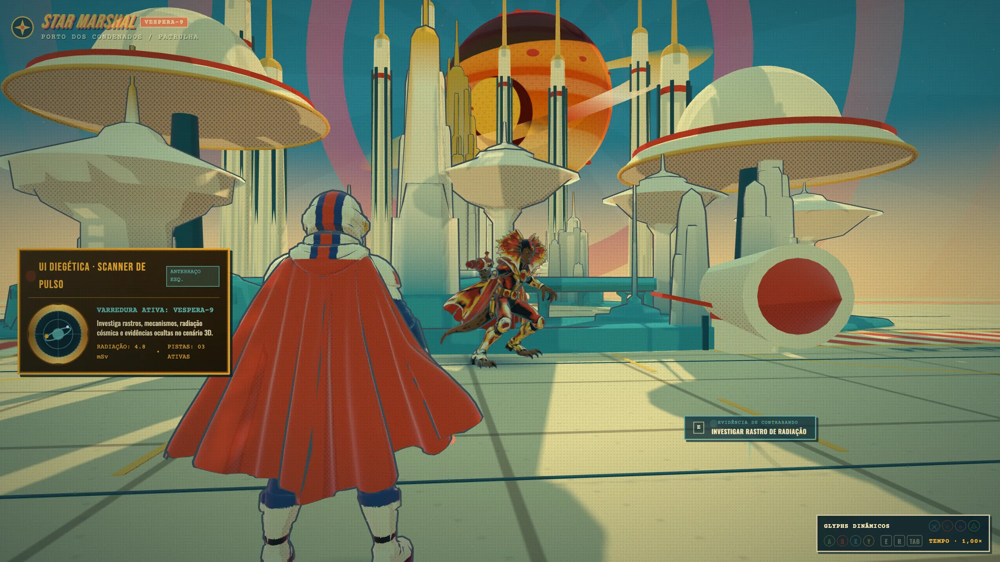
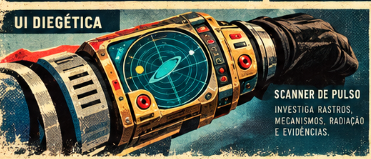
06 · Direção de arte
A paleta e o acabamento de impressão saem da ilustração do personagem e da prancha. O modelo 3D, a cidade e a interface usam as mesmas seis tintas.
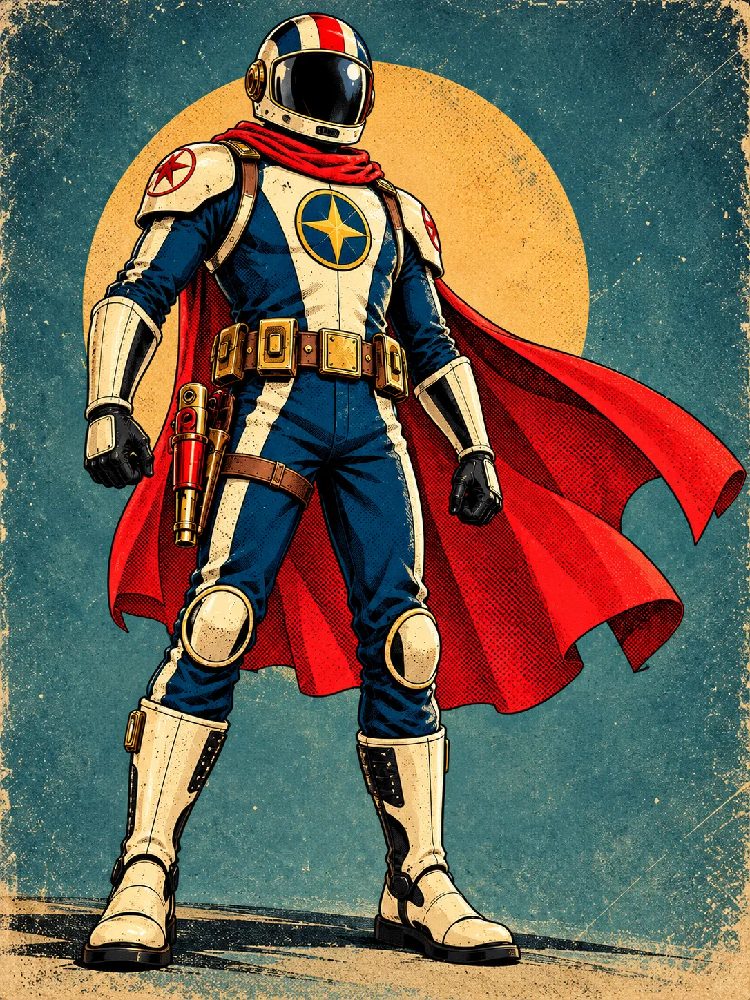
Ilustração · referência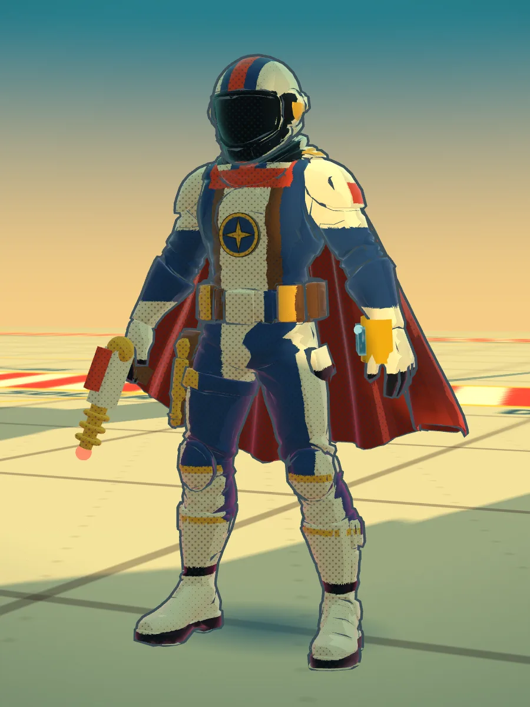
Modelo em tempo realPaleta
Tipografia do HUD
024 · Raio MK-II
Bebas Neue · números e títulosRestaurar traje
Oswald · rótulos e promptsVarredura ativa: Vespera-9
Courier Prime · legendas datilografadas07 · Protótipo jogável
Ande, mire, atire, abra o scanner e a roda. Os estados mudam pelo jogo ou pelos atalhos 1, 2 e 3. Funciona com teclado e mouse ou com um controle.
Inicie sua
patrulha.
Cena 3D em tempo real · carrega só ao iniciar · requer WebGL e internet
Three.js com modelos OBJ e pintura procedural. Clique na cena antes de usar o teclado; Esc fecha a roda. Fora da tela, a cena pausa.
08 · Escopo e próximos passos
O estudo liga linguagem visual, hierarquia de informação e comportamento de interface numa cena navegável. Ainda não houve teste com jogadores.
Troca de estados do HUD, mira, disparo, recarga, scanner, roda com bullet time e glyphs automáticos, numa cena 3D com personagem controlável.
Testes com jogadores, legibilidade a três metros de uma TV, validação com controles físicos PlayStation e Xbox e opções de tamanho e contraste do HUD.
Animações de corpo inteiro por retargeting para o esqueleto do personagem no Godot 4, scanner renderizado no próprio bracelete e marcadores com oclusão.
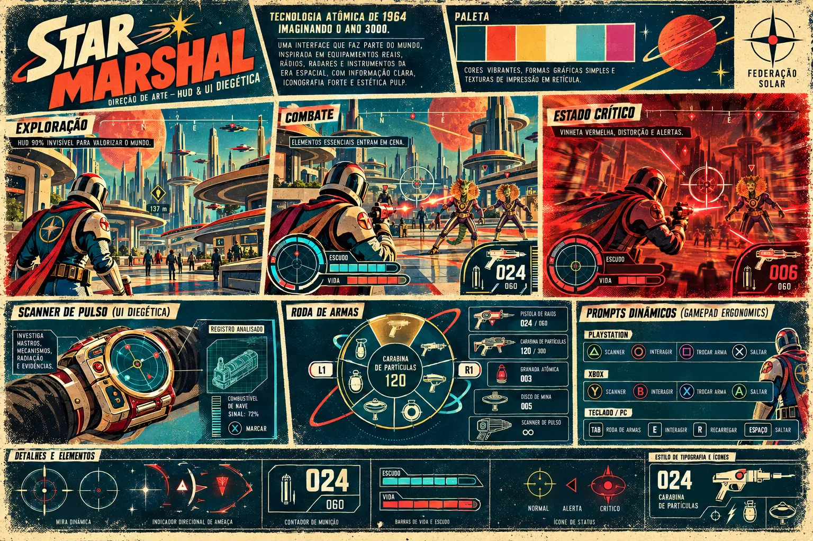